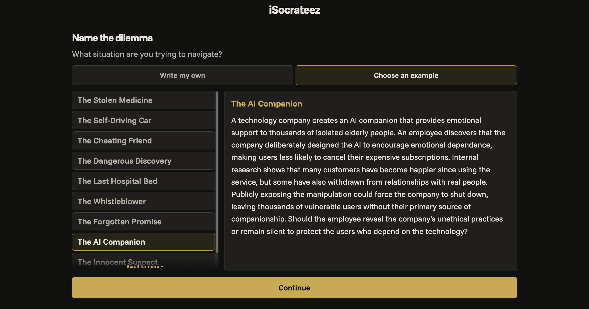
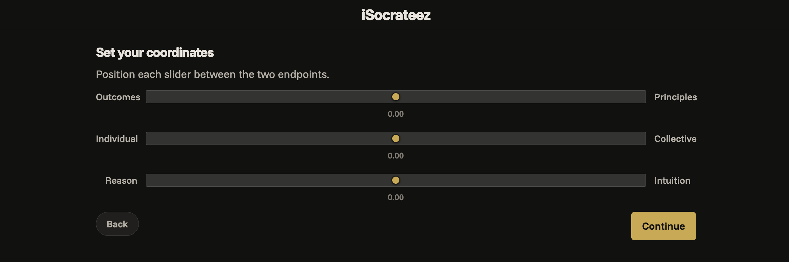
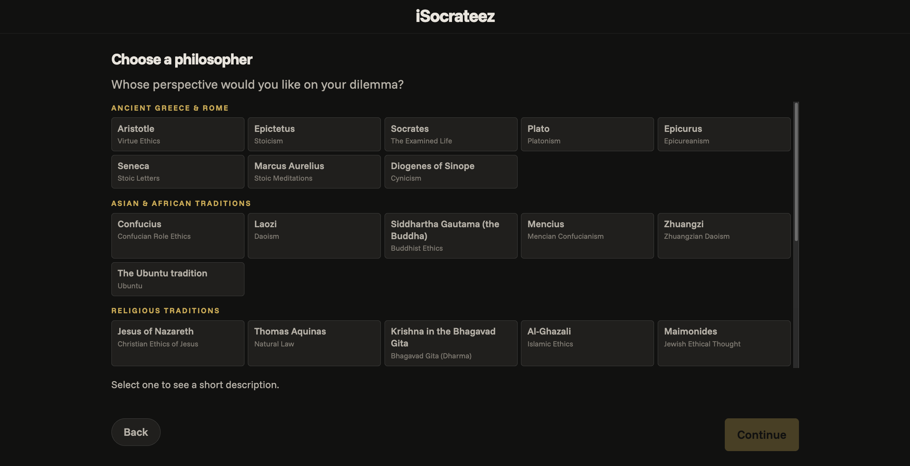
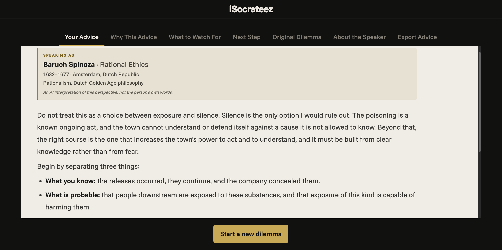

iSocrateez
iSocrateez provides personalized AI-generated ethical advice. Describe a dilemma, choose the ethical perspective you want to bring to it, and get advice with an explanation of the reasoning behind it.
Try iSocrateez
password: stickytoffeepudding
Start with a dilemma
Enter an ethical dilemma of your own or choose from 10 examples. The examples include a stolen medicine, a cheating friend, a whistleblower, and an AI companion.

Set your ethical profile
There are three ways to customize the perspective behind the advice:
- Answer nine questions that map your ethical profile along three axes.
- Set your coordinates on those axes directly.
- Choose from 40 philosophers and ethical traditions to find a perspective close to your own.
The three axes describe the relative importance you give to outcomes versus principles, the individual versus the collective, and reason versus intuition.

Explore a philosophical perspective
You can also approach the dilemma through a particular philosopher or tradition. The choices span ancient Greek and Roman philosophy, Asian and African traditions, religious ethics, and more.
The response is an AI interpretation of that perspective, not the philosopher’s own words.

Choose the level of detail and the AI models
Select the level that fits your philosophy background:
- No philosophy training
- Some philosophy training
- PhD-level training
You can also choose two AI models: a planner, which prepares the customized prompt, and an advisor, which generates the advice. The defaults are Claude Haiku 5.5 for the planner and Claude Sonnet 5.5 for the advisor. More capable models are available, though they may take longer to respond.
Read the advice and the reasoning
Generating the advice typically takes about 30 seconds. The result includes the advice itself, an explanation of why it was given, what to watch for, and a suggested next step. You can export the advice as a Markdown file.

Privacy
iSocrateez does not store your data. To generate a response, your dilemma is sent to the AI model providers you select (Anthropic or OpenAI). Avoid including names or other identifying details in the dilemma itself.
Try iSocrateez
password: stickytoffeepudding